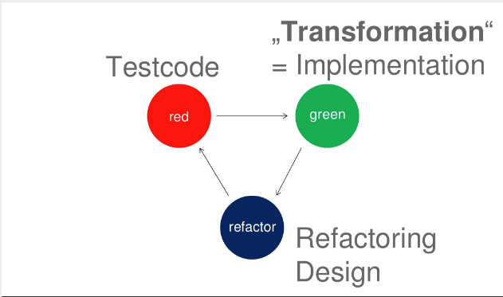
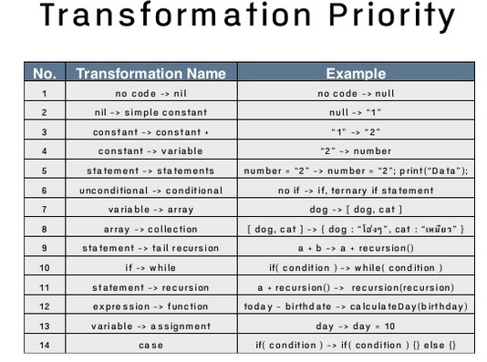

TDD
- But what to choose next ?!
- What is the most simple implementation ?
- Uncle Bob (again) in 2010 (8 years ago -.-) invented
- Transformation Priority Premise
Transformation

Priority
A set of transformation order by Priority

From specific to generic
Premise
- This is not a rule,
- This is not a law,
- This is something that seems to work, nothing proved,
- Just a guidline...
How to use it ?
When passing a test to green, prefer transformations on the top of the list,
Choose a test that allows simpler transformation,